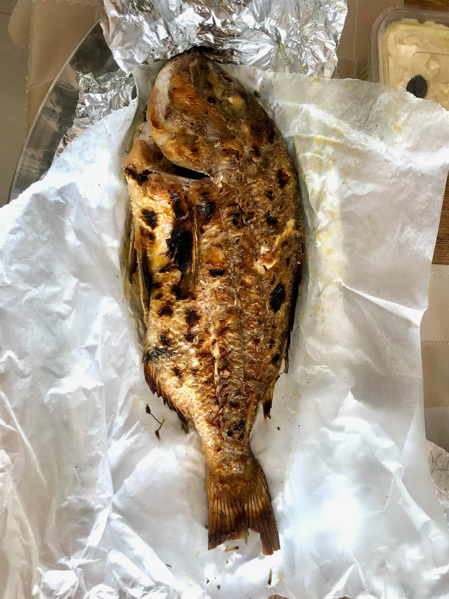
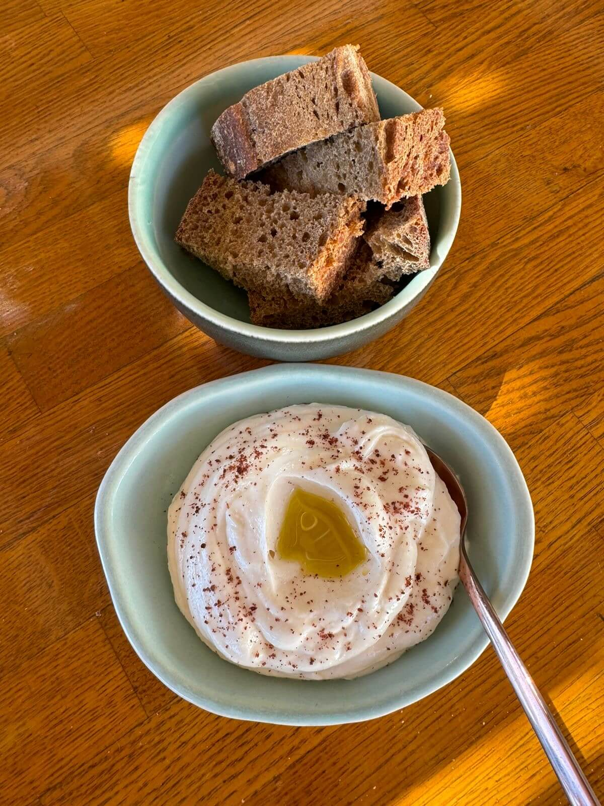

Our Aegean Treasures
Experience the authentic flavors of the Cyclades with our carefully selected fresh seafood
Λαβράκι (Lavráki)
European Sea Bass
Mild and clean-flavored, with flaky white meat — adored across the Mediterranean.
Serving suggestion: Salt-baked, grilled, or filleted and pan-seared; can also be served raw with olive oil, salt, and lemon.

Τσιπούρα (Tsipoúra)
Gilthead Sea Bream
Delicate and buttery, a classic of Greek cuisine.
Serving suggestion: Grilled whole, often with ladolemono; can also be served raw with olive oil, salt, and lemon.

Φαγκρί (Fagrí)
Red Porgy
Known for its firm texture and refined flavor, this fish is the highlight of many celebratory meals.
Serving suggestion: Whole, grilled or baked with herbs, lemon, and olive oil; can also be served raw with olive oil, salt, and lemon.

Συναγρίδα (Synagrída)
Dentex
Firm-fleshed and bright in flavor — one of the Aegean's finest.
Serving suggestion: Grilled or baked, often on the bone to retain its natural juices.
Ροφός / Σφυρίδα / Στείρα
Groupers (Rofos, Sfyrida, Steira)
These rare, large reef dwellers are among Greece's most prized fish. Dense, juicy, and clean-flavored. Super rare and highly prized in Greek cuisine.
Serving suggestion: Grilled or slow-baked whole; ideal for soups. Can also be served raw with olive oil, salt, and lemon.
Σκορπίνα (Skorpína)
Scorpionfish
A spiny, vibrant fish with delicate, white flesh and a hint of sweetness.
Serving suggestion: Braised or baked whole; also excellent for bouillabaisse-style soups.
Μπαρμπούνι (Barboúni)
Red Mullet
A premium Greek catch, with rich, pink flesh and exceptional depth of flavor.
Serving suggestion: Pan-fried whole or grilled when ultra-fresh; can also be served raw with olive oil, salt, and lemon.
Αστακός (Astakós)
Greek Lobster
Distinct from Atlantic lobster, it offers sweeter, more delicate flesh. A showstopper at any Greek table.
Serving suggestion: Grilled whole with olive oil and lemon, or as the hero of a lobster pasta.
Καραβίδα (Karavída)
Crayfish
Similar to small lobsters with sweet, tender meat.
Serving suggestion: Lightly grilled or poached, perfect for pasta or risotto.

Γαρίδα (Garída)
Red Shrimp
Rare and intensely flavorful — a luxurious ingredient often found in gourmet Greek seafood dishes.
Serving suggestion: Flash-sautéed or grilled whole; heads and shells often used for bisque.
Κυδώνι (Kydóni)
Clams
Plump and briny, with a chewy texture and clean finish.
Serving suggestion: Steamed in white wine, garlic, and herbs, or raw with lemon.
Μύδι (Mýdi)
Mussels
Mild, tender, and briny — a staple of Aegean shores.
Serving suggestion: Steamed in ouzo or white wine, tossed with herbs and lemon.
Αχινός (Ahinós)
Sea Urchin
A delicacy of the Aegean, prized for its rich, briny roe — a true expression of the sea's essence. Briny, luxurious roe enjoyed raw with lemon.
Serving suggestion: Best enjoyed raw with a touch of lemon or spooned over warm pasta or toast.
Καλαμάρι (Kalamári)
Squid
Plump, tender squid — a versatile Greek classic.
Serving suggestion: Fried for a crisp bite or grilled with olive oil and sea salt when freshness allows.
Αθερίνα (Atherína)
Sand Smelt
Tiny, silvery fish known for their crisp texture and clean flavor — a staple of seaside tavernas.
Serving suggestion: Lightly floured and fried whole, served with lemon and oregano.
Γαύρος (Gávros)
European Anchovy
Small, flavorful fish perfect for meze — often marinated or fried until golden.
Serving suggestion: Marinated in vinegar and olive oil, or lightly fried and served with ouzo.

Ταραμάς (Taramás)
Fish Roe / Taramasalata
Used in taramasalata — a creamy, briny spread rooted in Greek tradition.
Serving suggestion: Whipped with lemon, olive oil, and bread or potatoes — a signature meze.
Κακαβιά (Kakaviá)
Fisherman's Soup
A rustic, nourishing soup made from fresh fish bones, heads, and seasonal vegetables.
Serving suggestion: Served warm, with crusty bread and olive oil; always unique, based on the day's catch.